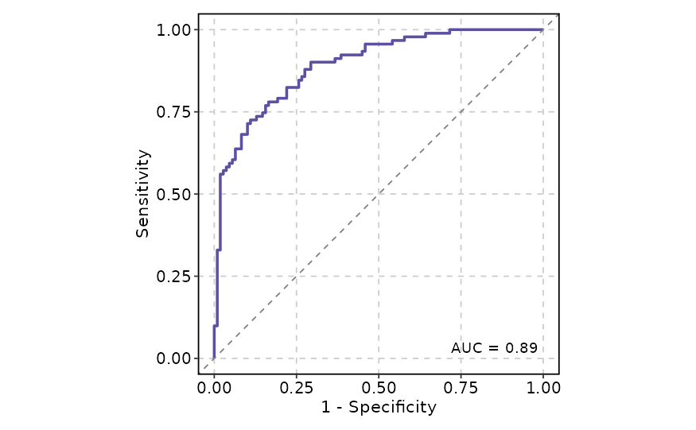
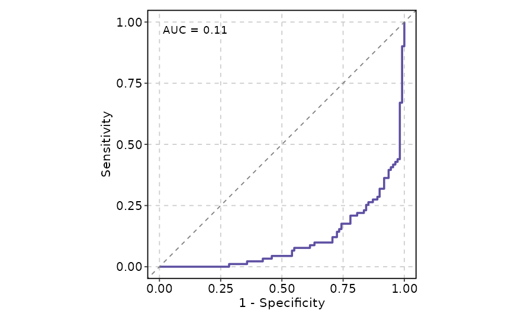
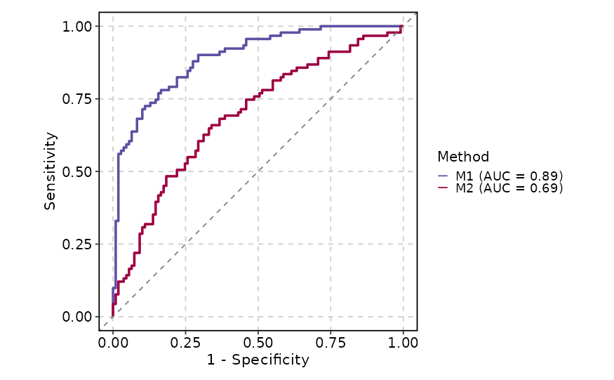
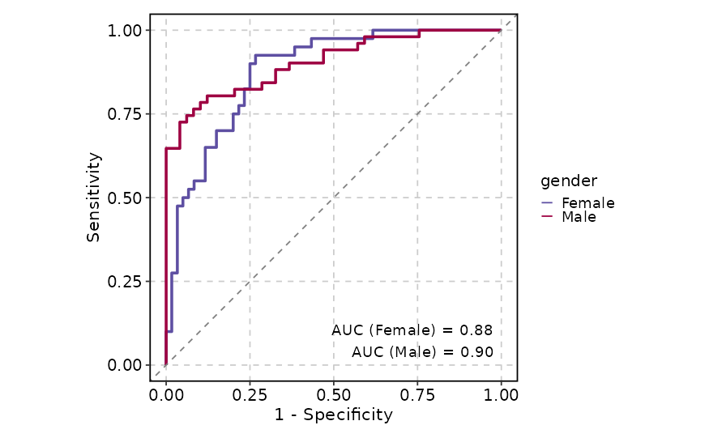
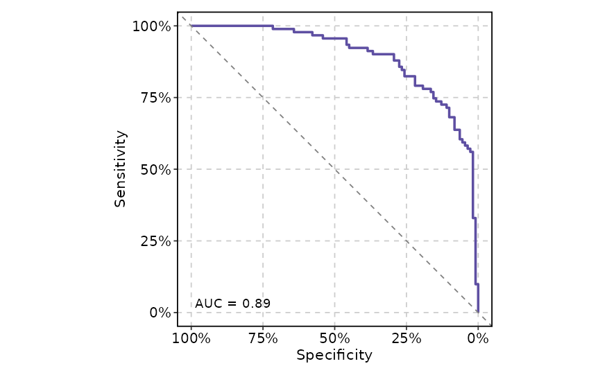
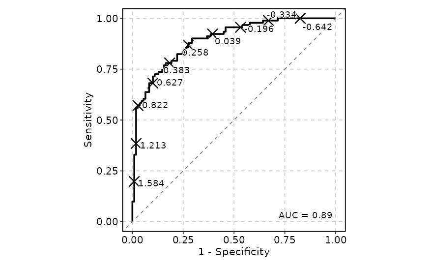
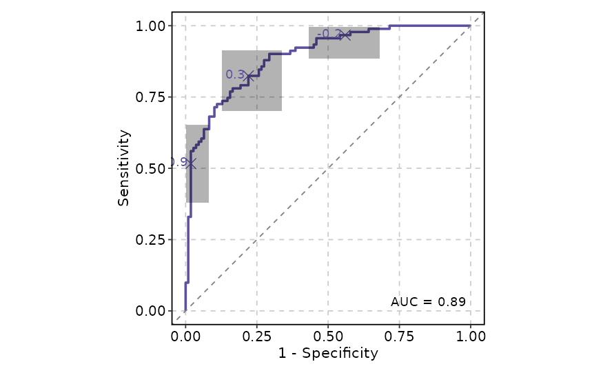
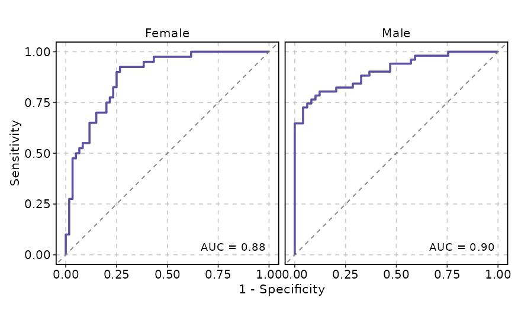
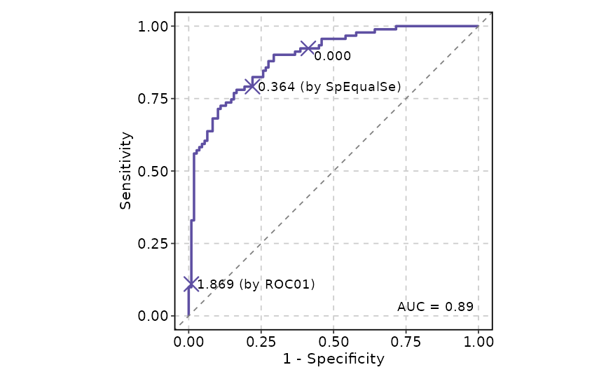
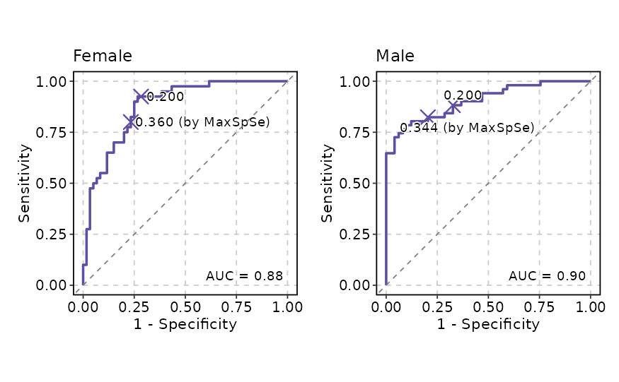

Draws one or more Receiver Operating Characteristic (ROC) curves for
evaluating binary classifier performance. The function wraps
ROCCurveAtomic with split_by handling, providing the
ability to generate separate ROC curves per split level and combine them
via wrap_plots.
Usage
ROCCurve(
data,
truth_by,
score_by,
pos_label = NULL,
split_by = NULL,
split_by_sep = "_",
group_by = NULL,
group_by_sep = "_",
group_name = NULL,
x_axis_reverse = FALSE,
percent = FALSE,
ci = NULL,
n_cuts = 0,
cutoffs_at = NULL,
cutoffs_labels = NULL,
cutoffs_accuracy = 0.001,
cutoffs_pt_size = 5,
cutoffs_pt_shape = 4,
cutoffs_pt_stroke = 1,
cutoffs_labal_fg = "black",
cutoffs_label_size = 4,
cutoffs_label_bg = "white",
cutoffs_label_bg_r = 0.1,
show_auc = c("auto", "none", "legend", "plot"),
auc_accuracy = 0.01,
auc_size = 4,
theme = "theme_this",
theme_args = list(),
palette = "Spectral",
palcolor = NULL,
palreverse = FALSE,
alpha = 1,
facet_by = NULL,
facet_scales = "fixed",
facet_ncol = NULL,
facet_nrow = NULL,
facet_byrow = TRUE,
aspect.ratio = 1,
legend.position = waiver(),
legend.direction = "vertical",
title = NULL,
subtitle = NULL,
xlab = ifelse(x_axis_reverse, "Specificity", "1 - Specificity"),
ylab = "Sensitivity",
combine = TRUE,
nrow = NULL,
ncol = NULL,
byrow = TRUE,
seed = 8525,
axes = NULL,
axis_titles = axes,
guides = NULL,
design = NULL,
...
)Arguments
- data
A data frame.
- truth_by
A character string naming the column that contains the true class labels (binary outcome, 0/1 or TRUE/FALSE).
- score_by
A character vector of column names containing the predicted scores (classifier output values). When multiple columns are provided, each column becomes a separate ROC curve grouped by a
.groupidentifier. When multiple columns are used,group_bymust be NULL.- pos_label
A character string specifying the positive class label in
truth_by. When NULL (default), the labels are handled by theplotROCpackage: iftruth_byis a factor, the last level is used; otherwise it is coerced to a factor with a warning.- split_by
The column(s) to split the data by and produce separate ROC curve plots for each level. The
split_bycolumn is removed from the per-split data to avoid interfering with ROC analysis. Multiple columns are concatenated withsplit_by_sep.- split_by_sep
A character string used to separate concatenated
split_bycolumns. Default:"_".- group_by
Columns to group the data for plotting For those plotting functions that do not support multiple groups, They will be concatenated into one column, using
group_by_sepas the separator- group_by_sep
The separator for multiple group_by columns. See
group_by- group_name
A character string to use as the legend title for the ROC curve groups. When NULL (default), the
group_bycolumn name is used.- x_axis_reverse
A logical value. If TRUE, the x-axis is reversed (from 1 to 0), displaying specificity instead of 1 - specificity. The x-axis label automatically changes to
"Specificity". Default: FALSE.- percent
A logical value. If TRUE, the x and y axes are displayed as percentages (0 to 100). Default: FALSE.
- ci
A list of arguments passed to
plotROC::geom_rocci()to add confidence intervals to the ROC curve. When NULL (default), no confidence intervals are drawn. Example:ci = list(sig.level = 0.05).- n_cuts
An integer specifying the number of evenly-spaced quantile-based cutoff points to annotate on the ROC curve. Quantiles are computed from the
score_bydistribution. Default:0(no quantile cutoffs). Ignored whencutoffs_atis non-NULL.- cutoffs_at
A vector of user-supplied cutoff values to annotate as points on the ROC curve. When non-NULL, overrides
n_cuts. Accepts raw numeric score thresholds and/or named method strings from theoptimal.cutpointspackage for automatic optimal cutoff identification. Bothcutoffs_atandcutoffs.labelsare passed toplotROC::geom_roc(). Supported method values are:"CB"(cost-benefit method);"MCT"(minimises Misclassification Cost Term);"MinValueSp"(a minimum value set for Specificity);"MinValueSe"(a minimum value set for Sensitivity);"ValueSe"(a value set for Sensitivity);"MinValueSpSe"(a minimum value set for Specificity and Sensitivity);"MaxSp"(maximises Specificity);"MaxSe"(maximises Sensitivity);"MaxSpSe"(maximises Sensitivity and Specificity simultaneously);"MaxProdSpSe"(maximises the product of Sensitivity and Specificity);"ROC01"(minimises distance between ROC plot and point (0,1));"SpEqualSe"(Sensitivity = Specificity);"Youden"(Youden Index);"MaxEfficiency"(maximises Efficiency/Accuracy);"Minimax"(minimises the most frequent error);"MaxDOR"(maximises Diagnostic Odds Ratio);"MaxKappa"(maximises Kappa Index);"MinValueNPV"(a minimum value set for Negative Predictive Value);"MinValuePPV"(a minimum value set for Positive Predictive Value);"ValueNPV"(a value set for Negative Predictive Value);"ValuePPV"(a value set for Positive Predictive Value);"MinValueNPVPPV"(a minimum value set for Predictive Values);"PROC01"(minimises distance between PROC plot and point (0,1));"NPVEqualPPV"(Negative Predictive Value = Positive Predictive Value);"MaxNPVPPV"(maximises Positive and Negative Predictive Values simultaneously);"MaxSumNPVPPV"(maximises the sum of the Predictive Values);"MaxProdNPVPPV"(maximises the product of Predictive Values);"ValueDLR.Negative"(a value set for Negative Diagnostic Likelihood Ratio);"ValueDLR.Positive"(a value set for Positive Diagnostic Likelihood Ratio);"MinPvalue"(minimises p-value of the Chi-squared test);"ObservedPrev"(closest value to observed prevalence);"MeanPrev"(closest value to the mean of the test values);"PrevalenceMatching"(predicted prevalence equals observed prevalence).
- cutoffs_labels
A character vector of user-supplied labels for the cutoff points. Must be the same length as
cutoffs_at. When NULL, labels are generated automatically (score value or method name).- cutoffs_accuracy
A numeric value controlling the rounding precision of automatically generated cutoff labels. Default:
0.01.- cutoffs_pt_size
A numeric value specifying the size of the cutoff point markers. Default:
5.- cutoffs_pt_shape
A numeric value specifying the shape of the cutoff point markers. Default:
4(cross).- cutoffs_pt_stroke
A numeric value specifying the stroke width of the cutoff point markers. Default:
1.- cutoffs_labal_fg
A character string specifying the text colour of the cutoff labels. Default:
"black".- cutoffs_label_size
A numeric value specifying the font size of the cutoff labels. Default:
4.- cutoffs_label_bg
A character string specifying the background colour of the cutoff labels. Default:
"white".- cutoffs_label_bg_r
A numeric value specifying the background radius of the cutoff labels (passed to
ggrepel::geom_text_repel()). Default:0.1.- show_auc
A character string specifying the display mode for AUC values:
"auto"(default): Automatically determine the position. When there is a single group orfacet_byis provided, AUC is placed on the plot; otherwise AUC is placed in the legend."none": Do not display AUC values."legend": Display AUC values in the legend labels."plot": Display AUC values as text on the plot.
- auc_accuracy
A numeric value controlling the rounding precision of AUC values in labels. Default:
0.01.- auc_size
A numeric value specifying the font size of AUC labels when displayed on the plot. Default:
4.- theme
A character string or a theme class (i.e. ggplot2::theme_classic) specifying the theme to use. Default is "theme_this".
- theme_args
A list of arguments to pass to the theme function.
- palette
A character string specifying the palette to use. A named list or vector can be used to specify the palettes for different
split_byvalues.- palcolor
A character string specifying the color to use in the palette. A named list can be used to specify the colors for different
split_byvalues. If some values are missing, the values from the palette will be used (palcolor will be NULL for those values).- palreverse
A logical value indicating whether to reverse the palette. Default is FALSE.
- alpha
A numeric value specifying the transparency of the plot.
- facet_by
A character string specifying the column name of the data frame to facet the plot. Otherwise, the data will be split by
split_byand generate multiple plots and combine them into one usingpatchwork::wrap_plots- facet_scales
Whether to scale the axes of facets. Default is "fixed" Other options are "free", "free_x", "free_y". See
ggplot2::facet_wrap- facet_ncol
A numeric value specifying the number of columns in the facet. When facet_by is a single column and facet_wrap is used.
- facet_nrow
A numeric value specifying the number of rows in the facet. When facet_by is a single column and facet_wrap is used.
- facet_byrow
A logical value indicating whether to fill the plots by row. Default is TRUE.
- aspect.ratio
A numeric value specifying the aspect ratio of the plot.
- legend.position
A character string specifying the position of the legend. if
waiver(), for single groups, the legend will be "none", otherwise "right".- legend.direction
A character string specifying the direction of the legend.
- title
A character string specifying the title of the plot. A function can be used to generate the title based on the default title. This is useful when split_by is used and the title needs to be dynamic.
- subtitle
A character string specifying the subtitle of the plot.
- xlab
A character string specifying the x-axis label.
- ylab
A character string specifying the y-axis label.
- combine
A logical value. When TRUE (default), the list of per-split plots is combined into a single
patchworkobject withattr(p, "auc")andattr(p, "cutoffs")containing the aggregated results. When FALSE, returns a named list of individualggplotobjects.- nrow, ncol
Integer values specifying the number of rows and columns in the combined plot layout. Passed to
wrap_plots.- byrow
A logical value. If TRUE (default), the combined layout is filled row-wise. Passed to
wrap_plots.- seed
A numeric seed for reproducibility. Default:
8525. Passed tovalidate_common_args().- axes
A character string specifying how axes are treated across the combined layout. Passed to
combine_plots(). Options:"keep","collect","collect_x","collect_y".- axis_titles
A character string specifying how axis titles are treated across the combined layout. Defaults to
axes. Passed tocombine_plots().- guides
A character string specifying how legends are collected across panels in the combined layout. Passed to
combine_plots().- design
A custom layout specification for the combined plot. Passed to
combine_plots(). When specified,nrow,ncol, andbyroware ignored.- ...
Additional arguments.
Value
A patchwork object (when combine = TRUE) with
attr(p, "auc") and attr(p, "cutoffs") data frames
containing aggregated AUC values and cutoff information across all
splits. When combine = FALSE, returns a named list of
ggplot objects, each with their own attr(p[[i]], "auc")
and attr(p[[i]], "cutoffs").
Details
Key features:
Multiple classifiers — compare several prediction scores side-by-side by providing multiple
score_bycolumns.AUC display — area under the curve values shown on the plot or in the legend, with configurable precision.
Optimal cutoffs — identify and annotate optimal cutoff points using any of the 30+ methods from the
OptimalCutpointspackage, or supply custom numeric thresholds.Confidence intervals — add ROC confidence bands via
plotROC::geom_rocci().Axis orientation — reverse x-axis to show specificity or display axes as percentages.
Splitting and faceting — split data into sub-plots via
split_byor facet within a single plot viafacet_by.
split_by Workflow
When split_by is provided, the following pipeline executes:
Validation —
validate_common_args()checks the random seed andfacet_byconfiguration.Column resolution —
check_columns()resolvessplit_by(force_factor, allow_multi, concat_multi).Data splitting — Unused factor levels in
split_byare dropped viadroplevels(), and the data is split bysplit_bylevels (preserving factor level order). Ifsplit_byis NULL, the data is wrapped in a single-element list named"...".Per-split resolution —
check_palette(),check_palcolor(), andcheck_legend()resolve per-split palette, colour, legend.position, and legend.direction overrides.Per-split dispatch — For each split:
Title resolution: if
titleis a function, it receives the split level name; otherwisetitle %||% split_levelis used.The
split_bycolumn is removed from the per-split data frame to avoid conflicts with the ROC analysis.ROCCurveAtomic()is called with the per-split palette, palcolor, legend.position, and legend.direction.
Combination —
combine_plots()assembles the list of plots viapatchwork::wrap_plots, honouringnrow/ncol/byrow/design.AUC / cutoff collection — When
combine = TRUE, the per-splitaucandcutoffsattributes are collected into combined data frames with asplit_bycolumn identifying the source split, and stored asattr(p, "auc")andattr(p, "cutoffs").
Examples
set.seed(8525)
D.ex <- rbinom(200, size = 1, prob = .5)
M1 <- rnorm(200, mean = D.ex, sd = .65)
M2 <- rnorm(200, mean = D.ex, sd = 1.5)
gender <- c("Male", "Female")[rbinom(200, 1, .49) + 1]
data <- data.frame(D = D.ex, D.str = c("Healthy", "Ill")[D.ex + 1],
gender = gender, M1 = M1, M2 = M2)
# --- Basic ROC curve ---
ROCCurve(data, truth_by = "D", score_by = "M1")

# --- Will warn about the positive label ---
ROCCurve(data, truth_by = "D.str", score_by = "M1")
#> Warning: 'pos_label' is NULL, value 'Ill' from 'D.str' will be used as the positive label.
 # --- Decreasing direction ---
ROCCurve(data, truth_by = "D", score_by = "M1", increasing = FALSE)
# --- Decreasing direction ---
ROCCurve(data, truth_by = "D", score_by = "M1", increasing = FALSE)

# --- Multiple ROC curves (multiple classifiers) ---
ROCCurve(data, truth_by = "D", score_by = c("M1", "M2"), group_name = "Method")

# --- Grouping by a column ---
ROCCurve(data, truth_by = "D", score_by = "M1", group_by = "gender", show_auc = "plot")

# --- Reverse x-axis and display as percentages ---
ROCCurve(data, truth_by = "D", score_by = "M1", x_axis_reverse = TRUE, percent = TRUE)

# --- Custom n_cuts and single colour ---
ROCCurve(data, truth_by = "D", score_by = "M1", n_cuts = 10, palcolor = "black")

# --- Add confidence intervals ---
ROCCurve(data, truth_by = "D", score_by = "M1", ci = list(sig.level = .01))

# --- Facet by a column ---
ROCCurve(data, truth_by = "D", score_by = "M1", facet_by = "gender")

# --- Show cutoffs ---
ROCCurve(data, truth_by = "D", score_by = "M1", cutoffs_at = c(0, "ROC01", "SpEqualSe"))

# --- Split by a column ---
p <- ROCCurve(data, truth_by = "D", score_by = "M1", split_by = "gender",
cutoffs_at = c(0.2, "MaxSpSe"))
p

# Retrieve the AUC values
attr(p, "auc")
#> PANEL COORD group AUC gender
#> 1 1 1 1 0.8779167 Female
#> 2 1 1 1 0.9039616 Male
# Retrieve the cutoffs
attr(p, "cutoffs")
#> cutoff x y label ..group specificity
#> 1 0.2 0.2833333 0.9250000 0.200 0.7166667
#> 2 0.359521377967435 0.2333333 0.8000000 0.360 (by MaxSpSe) 0.7666667
#> 3 0.2 0.3265306 0.8823529 0.200 0.6734694
#> 4 0.344386035694676 0.2040816 0.8235294 0.344 (by MaxSpSe) 0.7959184
#> sensitivity gender
#> 1 0.9250000 Female
#> 2 0.8000000 Female
#> 3 0.8823529 Male
#> 4 0.8235294 Male